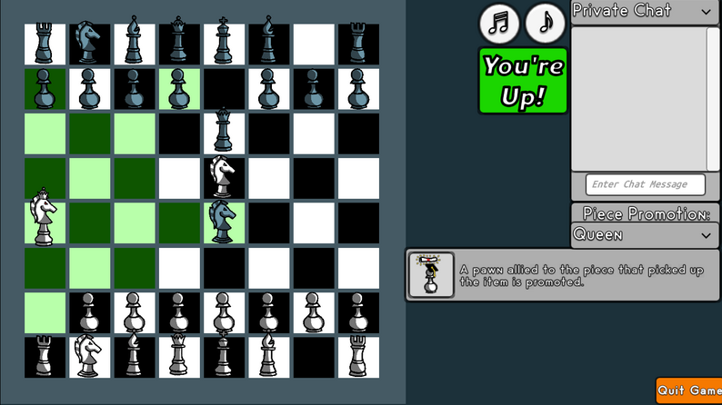
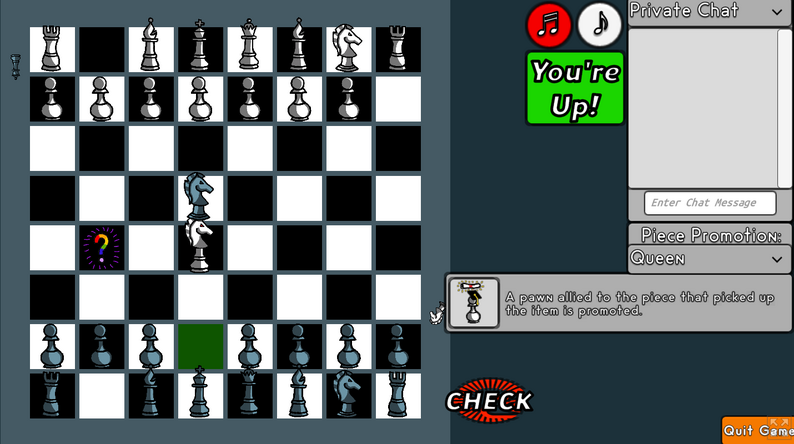

Chess But Better is an online chess mod created for a group class project. The assignment challenged teams to modify or build upon core chess mechanics to serve a specific purpose. Our team focused on leveling the playing field between novice and expert players by introducing an element of randomness.
To achieve this, we incorporated randomly spawning items that activate unique effects when a piece moves onto them. These effects range from freezing nearby pieces to temporarily transforming a piece into the “Monster,” a hybrid of a queen and a knight. By disrupting rigid strategies, these mechanics force both newcomers and seasoned players to adapt dynamically, making for a more unpredictable and engaging chess experience.
Chess But Better
Multiplayer Chess With Items
Visit The Itch.io Page To Play Online


Design & Development
(REPLACE ME)